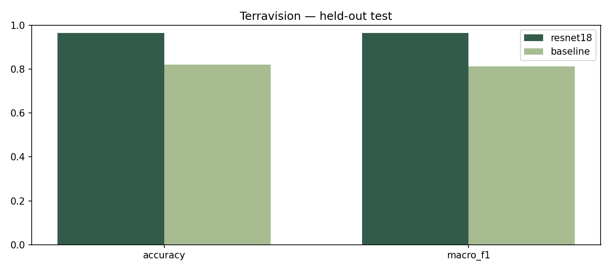
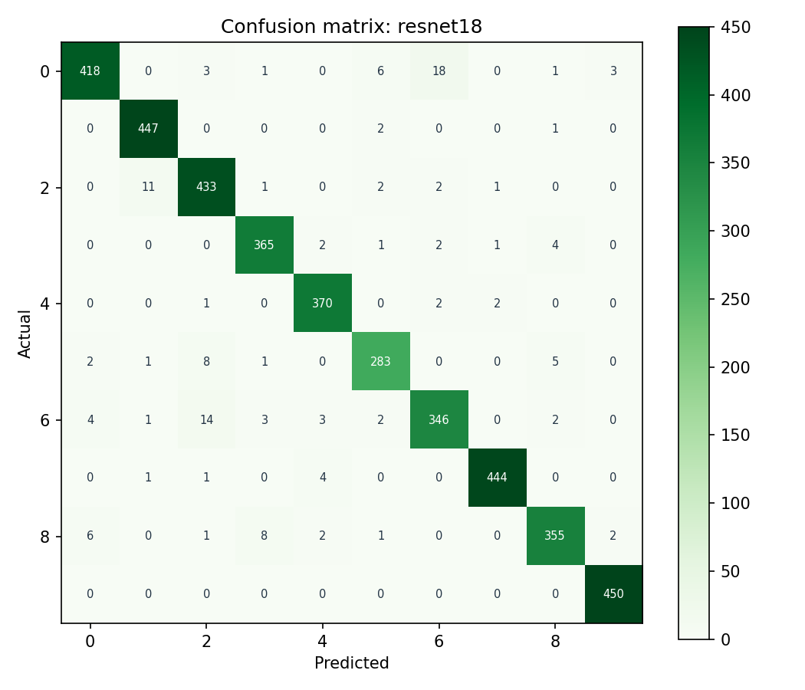

Reproducible experiment report / Raport eksperymentu
Seed 42. Frozen 70/15/15 train / validation / test split. Model selection on validation only. Selected model: resnet18. Test observations: 4050. Training: 467.3 seconds.
| Model | accuracy | macro_f1 |
|---|---|---|
| resnet18 | 0.96568 | 0.96448 |
| baseline | 0.82099 | 0.81301 |


Run train.ps1 for training; evaluate.ps1 for saved weights and frozen test set. Full metadata: artifacts/config.json. Source checksum: b4f5b234ecb7d7ff9c6cddb046543b4717c53fd6e9815be6c0e80cc614f51b90. Library versions in reports/environment.txt. Machine-readable metrics in metrics.json and metrics.csv. No external certification is claimed.